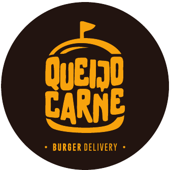

Política de Privacidade
Sistema de Indicadores e Incentivos da Queijo e Carne Burger LTDA. Última atualização: outubro de 2026.
Quem pode usar
O sistema é de uso interno. Só entram pessoas cujo e-mail Google foi autorizado previamente pela empresa: o dono, a gerência e os funcionários.
Quais dados usamos
Do login com Google, usamos apenas o nome e o e-mail, para identificar quem está acessando. Não lemos e-mails, contatos, arquivos nem nenhum outro dado da sua conta Google.
No cadastro guardamos também o seu papel (dono, gerente ou funcionário), o setor de trabalho (Cozinha ou Atendimento) e as datas de entrada e saída, usados para calcular os incentivos.
Os números de vendas vêm do sistema de caixa da loja e não incluem dados pessoais de clientes.
Para que usamos
Para controlar o acesso, mostrar os indicadores da loja e calcular o incentivo de cada funcionário. Os dados não são vendidos nem compartilhados com terceiros.
Onde ficam guardados
No Supabase, em servidores localizados em São Paulo, com acesso restrito por papel: cada funcionário vê só o próprio cadastro.
Seus direitos
Você pode pedir à empresa, a qualquer momento, para ver, corrigir ou excluir seus dados, conforme a Lei Geral de Proteção de Dados (LGPD). Quando alguém deixa a empresa, o acesso é desativado; o histórico de incentivos é mantido para fins de registro.